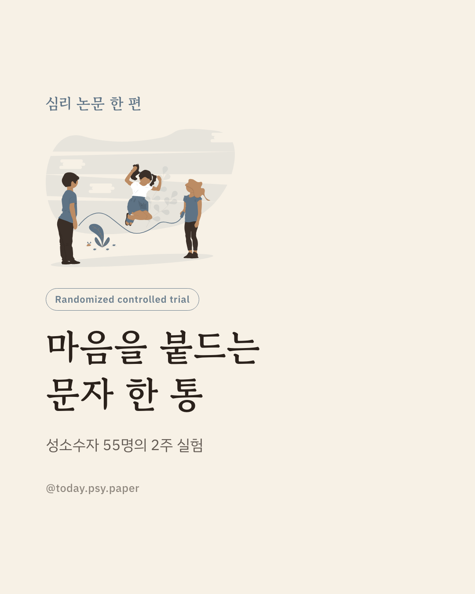
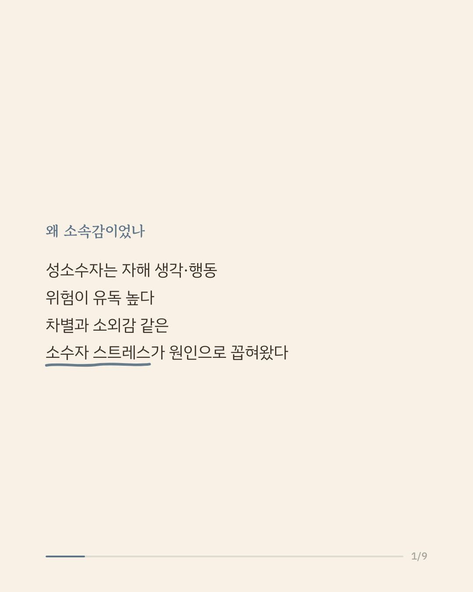
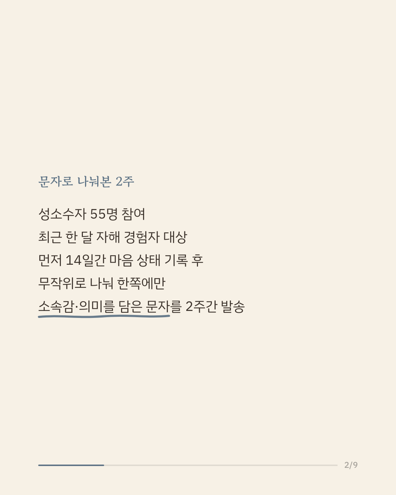
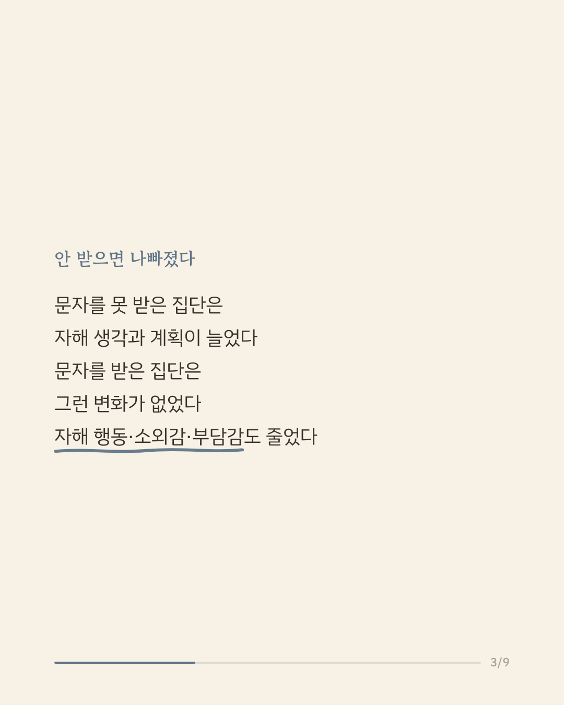
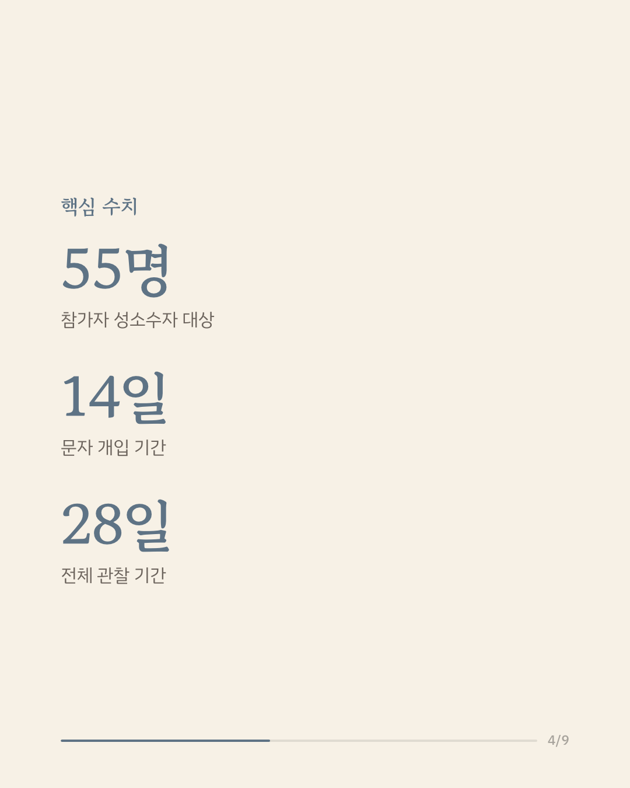
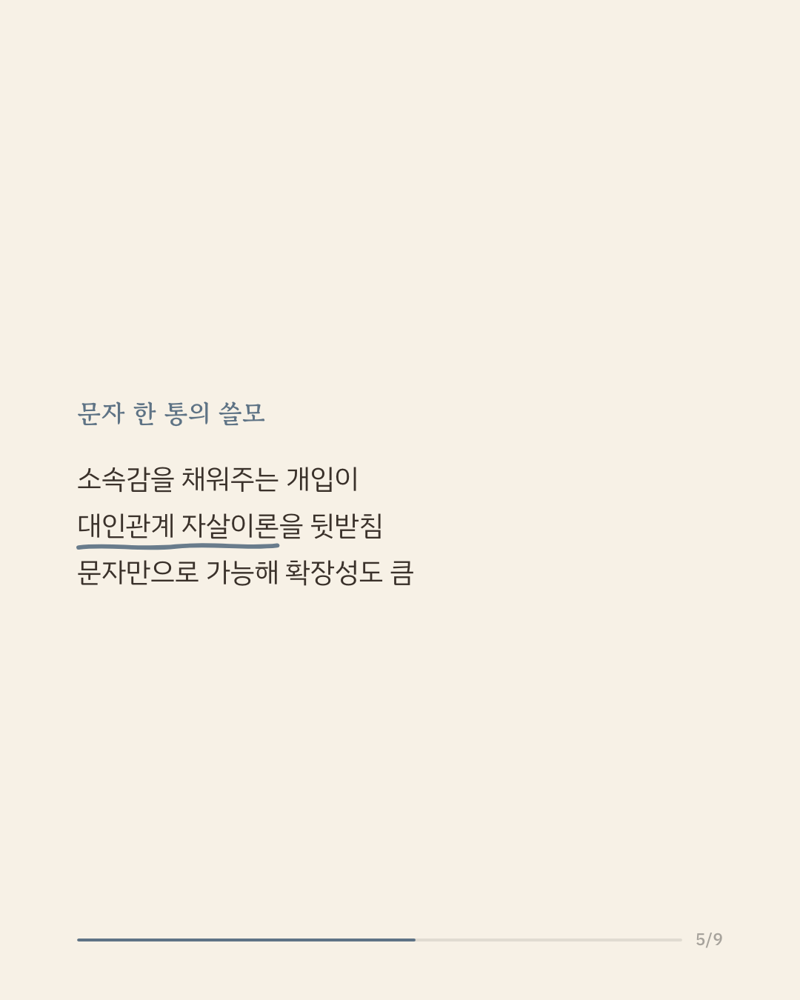
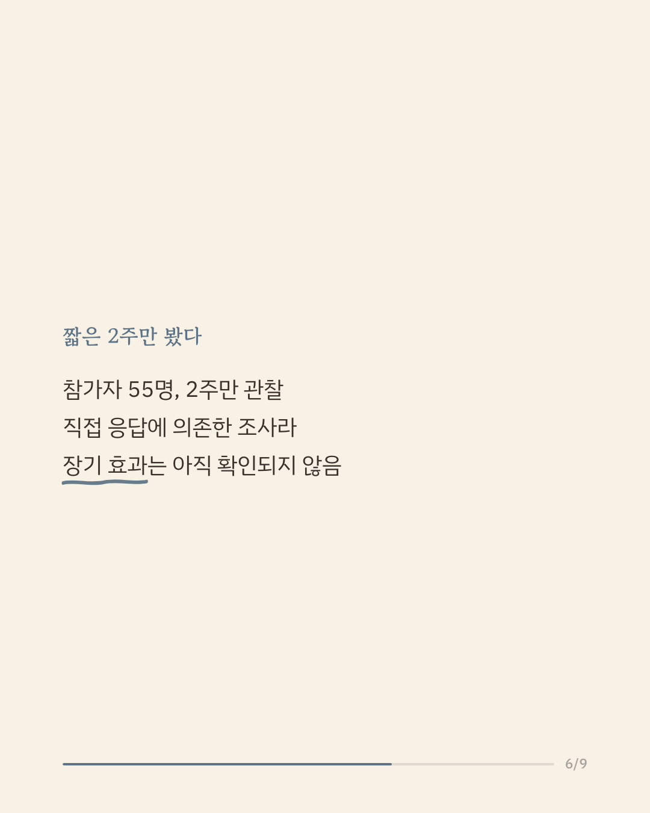
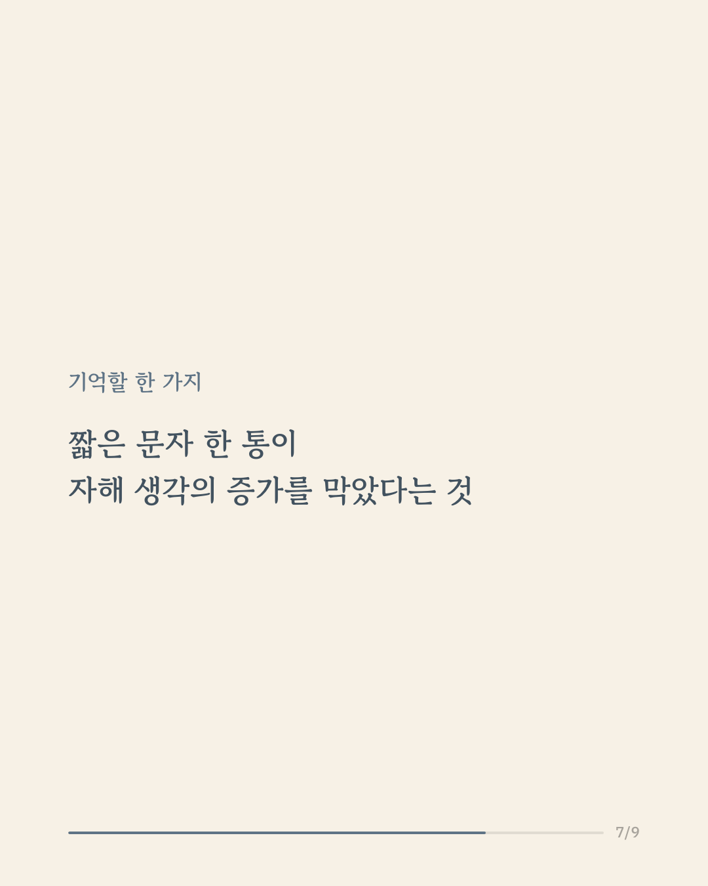
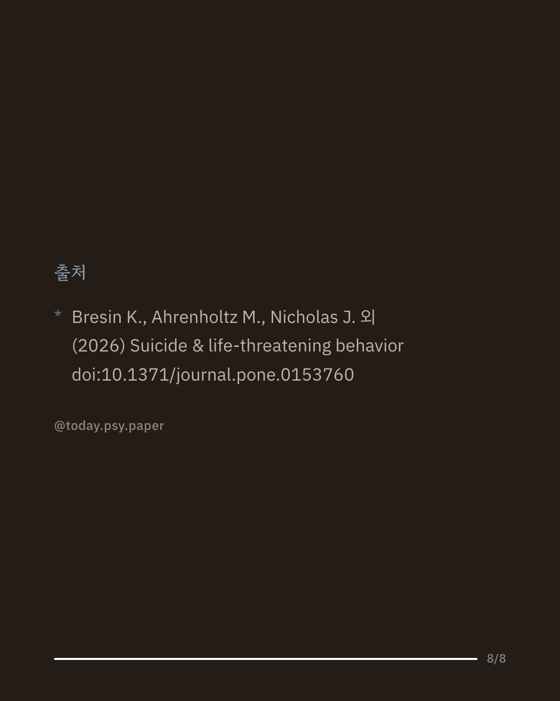

성소수자는 차별과 소외감 같은 소수자 스트레스로 인해 자해 생각과 행동의 위험이 더 높다는 연구들이 있습니다. 이 연구는 최근 한 달 사이 자해 생각이나 행동을 경험한 성소수자 55명을 대상으로, 소속감과 삶의 의미를 담은 짧은 문자 메시지가 도움이 되는지 실험했습니다. 참가자들은 먼저 14일간 매일 자신의 마음 상태를 기록했고, 이후 무작위로 나뉘어 한쪽만 소속감과 의미를 주제로 한 문자를 2주간 받았습니다. 그 결과 문자를 받지 못한 집단은 시간이 지나며 자해 생각과 계획이 늘어난 반면, 문자를 받은 집단은 그런 변화가 없었습니다. 자해 행동, 소외감, 짐이 된다는 느낌 역시 문자를 받은 집단에서만 유의미하게 줄었습니다. 이 결과는 소속감과 부담감을 자살 위험의 핵심 요인으로 보는 대인관계 자살이론을 뒷받침하며, 문자만으로 구현 가능해 확장 가능성이 큰 개입으로 평가됩니다. 다만 참가자가 55명으로 많지 않고 관찰 기간도 2주에 그쳐, 효과가 얼마나 오래 이어지는지는 아직 확인되지 않았습니다. 출처: Suicide & Life-Threatening Behavior (2026), 'Implementation of Mobile Health Intervention Targeting Belongingness and Burdensomeness: An Ecological Momentary Assessment Study of Self-Injurious Thoughts and Behaviors in LGBTQ+ Individuals' 힘든 마음이 들 때는 자살예방상담전화 109, 정신건강상담전화 1577-0199에서 도움을 받을 수 있습니다. #임상심리 #정신건강정보 #성소수자정신건강 #자살예방연구 #모바일헬스케어
python3 publish.py 42698200